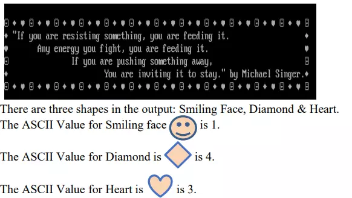
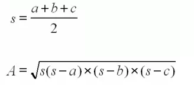
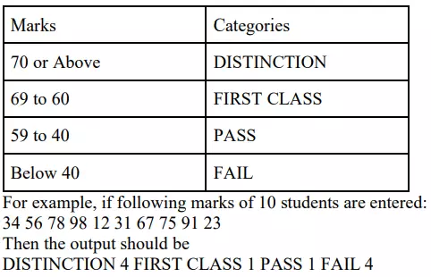
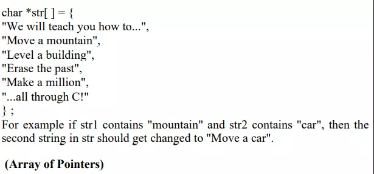
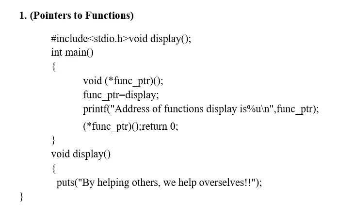
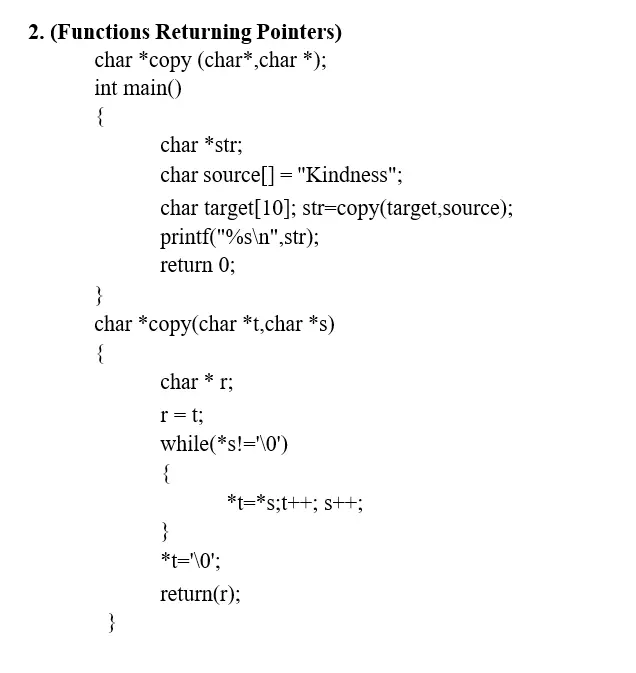

CE143 Computer Concepts and Programming
Subject Cordinator: - Prof. Hemant Yadav
Subject Name: - Computer Concepts and Programming
Semester: - 6
| PRACTICAL LIST | |
|---|---|
| 1 |
1.) Write a C program that will output this passage by Michael Singer. Make sure your output looks exactly as shown here (including spacing, line breaks, punctuation, and the title and author). Use Required Escape Sequence and ASCII Value.  2.) In a town, the percentage of men is 52. The percentage of total literacy is 48. If total percentage of literate men is 35 of the total population, write a program to find the total number of illiterate men and women if the population of the town is 80,000. Write Algorithms and Flowchart of this program 3.) A cashier has currency notes of denominations 10,50 and 100. If the amount to be withdrawn is input through the keyboard in hundreds, find the total number of currency notes of each denomination the cashier will have to give to the withdrawer |
| 2 |
1.) Write a program to calculate Net Salary. User has to input Basic Salary
and
Output
should be: Enter Basic Salary: 5000 (e.g. 5000) Allowances: DA = 70% of Basic Salary HRA = 7% of Basic Salary MA = 2% of Basic Salary TA = 4% of Basic Salary Deduction: PF = 12% of Basic Salary IT = any value (e.g. 500) ------------------------------------------------------------------------------------------ ---- Net Salary = Basic Salary + Allowances – Deduction The distance between two cities (in km) is input through the keyboard. Write a program to convert and print its distance in meters, feet, inches and centimeters. |
| 3 |
1.) Write a program to find the greatest of the three numbers entered
through
the keyboard using conditional operators. 2.) Any year is input through the keyboard. Write a program to determine whether the year is a leap year or not. Use the logical operators && and ||. |
| 4 |
1.) Write a program to convert the decimal number into octal and hexadecimal
format.
Hint: %o and %x
2.) Write a C Program to Print multiplication table of number entered by user. (Use formatted input/output, do not use for loop) |
| 5 |
1.) If the cost price and selling price of an item is input through the
keyboard,
write a program to determine whether the seller has made profit or incurred
loss. Also determine how much profit he made or loss he incurred.
2.) If the cost price and selling price of an item is input through the keyboard, write a program to determine whether the seller has made profit or incurred loss. Also determine how much profit he made or loss he incurred. 3.) The policy followed by a company to process customer orders is given by the following rules: a) If a customer order is less than or equal to that in stock and ‘has credit’ is OK, supply ‘has requirements’. b) If ‘has credit’ is not OK do not supply. Send him intimation. c) If ‘has credit’ is OK but the item in stock is less than ‘has ordered’, supply what is in stock and Intimate him that the balance will be refunded. Write a C program to implement the company policy. |
| 6 |
1.) Two numbers are entered through the keyboard. Write a program to find
the
value of one number raised to the power of another. (Use While loop)
2.) Write a program to print the multiplication table of the number entered from the keyboard. The table should get displayed in the following form: 12*1=12 12*2=24 .... (Use for loop) 3.) Write a menu driven program which has following options: 1. Prime or not 2. Perfect number or not 3. Factorial of a number 4. Exit Use do...while statement so that the menu is displayed at least once. Also use Switch statement. 4.) Write a program for a match-stick game between the computer and a user. Your Program should ensure that the computer always wins. Rules for the games are as follows: ● There are 21 match-sticks. ● The computer asks the player to pick 1, 2, 3, or 4 match-sticks. ● After the person picks, the computer does its picking. ● Whoever is forced to pick up the last match-stick loses the game. Use while loop, break and Continue Statements. To understand the above game in a better way, visit the following link: http://atozmath.com/Games/21MatchStick.aspx |
| 7 |
1.) Twenty-five numbers are entered from the keyboard into an array. Write a
program to find out how many of them are positive, negative, how many are
even and odd.
2.) Write a program for creating two arrays of different size and merge both arrays into one by sorting those arrays in ascending order. [Merge by sorting] 3.) Write a Program to multiply any two 3*3 Matrices. |
| 8 | 1.) Take a user input for a string and calculate the number of alphabets,
digits
and special characters from the given input.
2.) Take a user input for a string and calculate the number of alphabets, digits and special characters from the given input. 3.) Write a C program to check if the user inputted string is palindrome or not using recursion |
| 9 | 1.) Write a C program to check if the entered number is prime or not by
using
types of user defined functions (i) No arguments passed and no return value (ii) No arguments passed but a return value (iii) Argument passed but no return value (iv) Argument passed and a return value 2.) If the length of the sides of a triangle are denoted by a, b and c, then the area of triangle is given by:  3.) A positive integer is entered through the keyboard, write a function to find the binary equivalent of this number using recursion. |
| 10 | 1.) Write a C program to create a structure of Book Detail and display the
details
of the book in appropriate format by passing structure as function argument.
2.) Create a Union called library to hold accession number, title of the book, author name, price of the book and flag indicating whether the book is issued or not. (flag = 1 if the book is issued, flag = 0 otherwise). Write a program to enter data of one book and display the data. 3.) Write a C program for nested structure to display employee details such as, Age, Name, Address, Salary. |
| 11 | 1.) Write a program to read the marks of 10 students for the subject CE143
Computer concepts and Programming and computes the number of students
in categories FAIL, PASS, FIRST
CLASS and DISTINCTION using Pointers and Arrays.  2.) Write a program that uses an array of pointers to strings str[ ]. Receive two strings str1 and str2 and check if str1 is embedded in any of the strings in str[ ]. If str1 is found, then replace it with str2.  3.) Write output for the following programs:   |
| 12 | 1.) Write a program to read a text file ‘Demo.txt’ and print each word of
that
file in reverse order.
For example: Input: HELLO Output: OLLEH 2.) Write a program to print last n characters of a file. Use the function fopen(), fclose(), ftell(), fseek() and rewind(). 3.) Write a program to create a hospital.dat file containing the following details of hospital: Hospital Name, Hospital Address, Hospital Age, Hospital Bloodtype. A hospital keeps a file of blood donors in which each record has the format: Name: 20 columns Address: 20 columns Age: 2 columns Blood Type: 1 Column (Type 1,2,3 or 4) Write a program to read the file and print a list of all blood donors whose age is below 25 and blood is type 2. |
| 13 | 1.) Write a program to read and print the student details using structure
and
Dynamic Memory Allocation.
2.) Take the elements of the array using user input, read them and print the sum of all elements along with inputted array elements using Dynamic Memory Allocation. 3.) Write a program using a character string in a block of memory space created by calloc () and then modify the same to store a larger string using realloc () function. (Dynamic Array) |